Eixo Moema-Capão: mobilidade urbana como prática para requalificação da paisagem cultural
Trabalho de Conclusão de Curso em Arquitetura e Urbanismo, Centro Universitário SENAC, 2020.
A ideia lá comia solta/ Subia a manga amarrotada social/ No calor alumínio/ Não tinha caneta, nem papel/ E uma ideia fugia/ Era o rodo cotidiano Espaço é curto, quase um curral/ Na mochila amassada, uma quentinha abafada/ Meu troco é pouco, é quase nada/ Sou mais um no Brasil da Central/ Da minhoca de metal que corta as ruas/ É, como um concorde apressado cheio de força/ Que voa mais pesado que o ar/ E o avião do trabalhador?
O Rappa, “O Rodo Cotidiano”
Clique ou arraste as páginas, use os botões ou as setas do teclado para folhear o caderno (com Shift, as setas avançam e voltam 10 páginas). Para leitura com leitor de tela, baixe o PDF.
Mapas
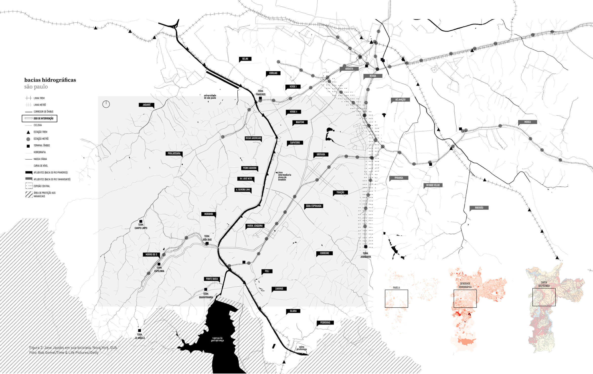
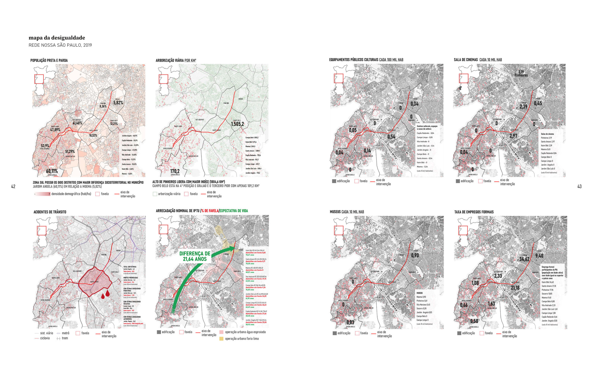
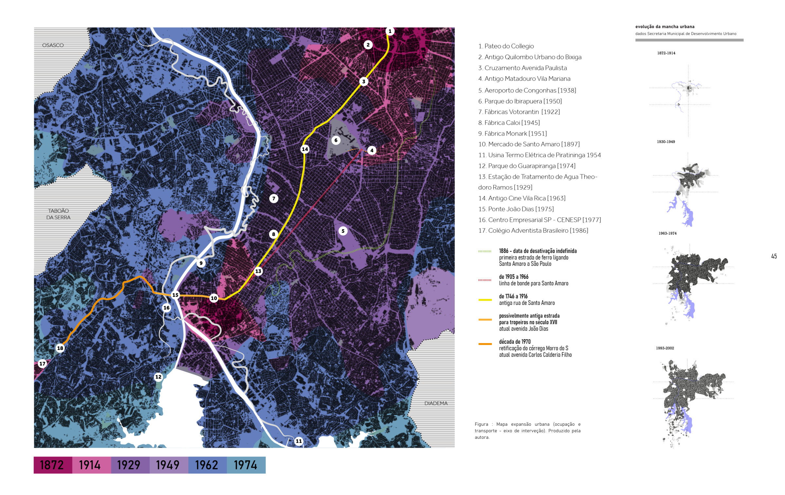
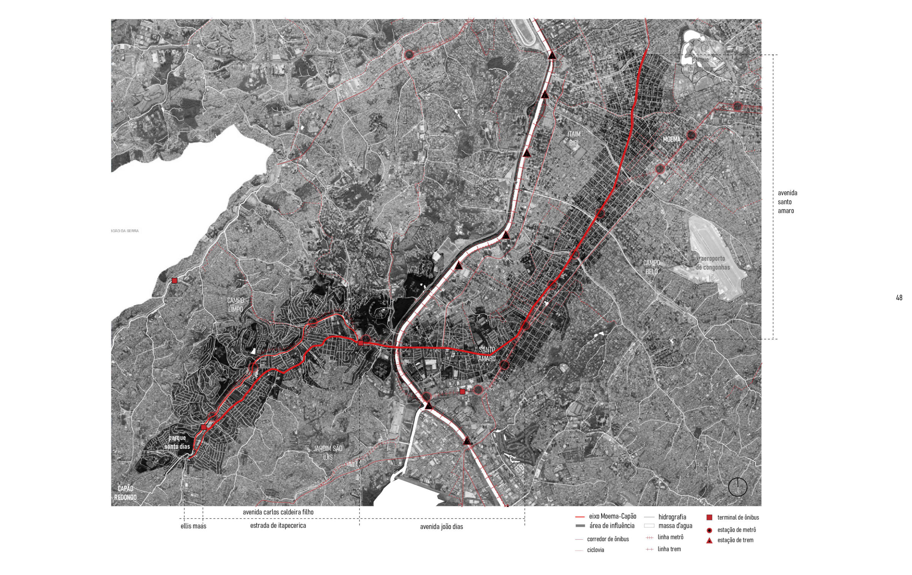
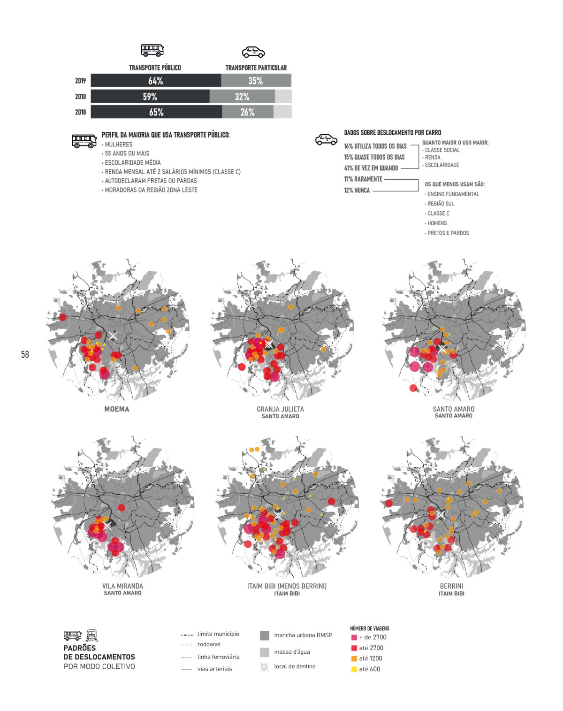
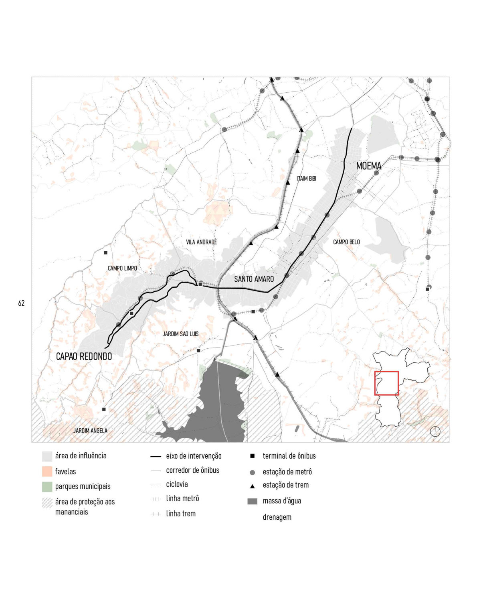
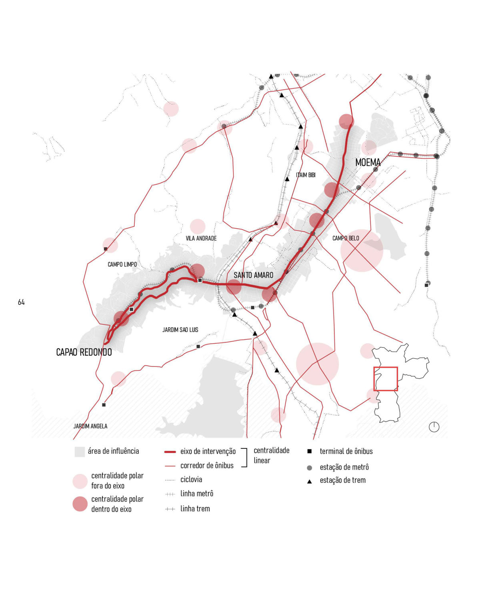
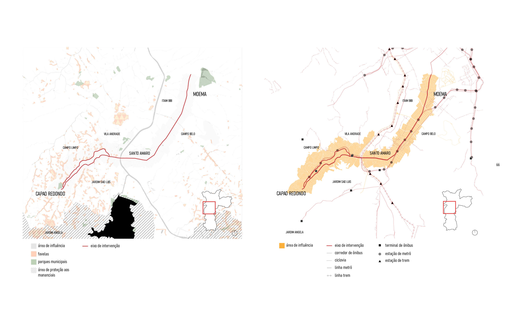
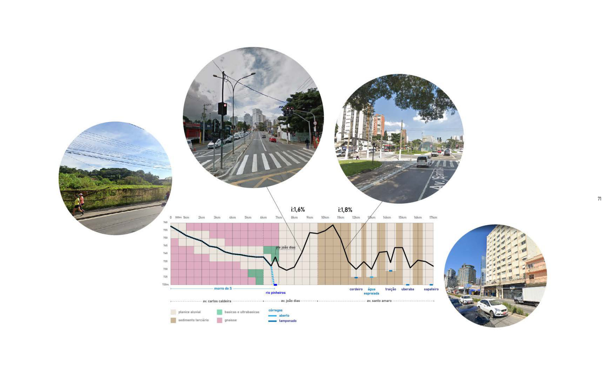
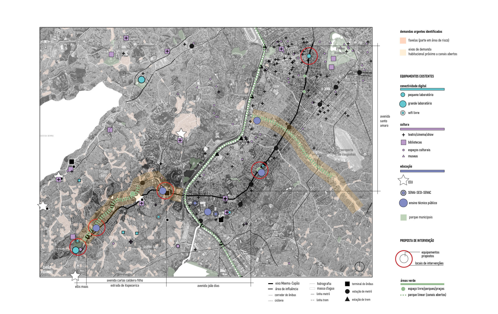

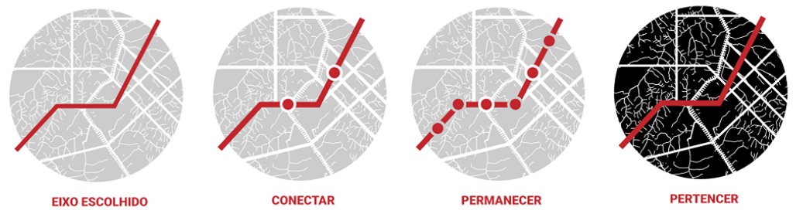
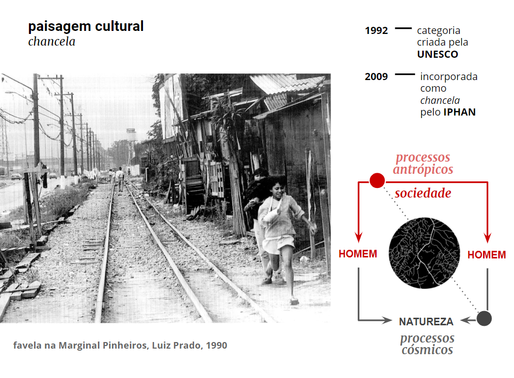
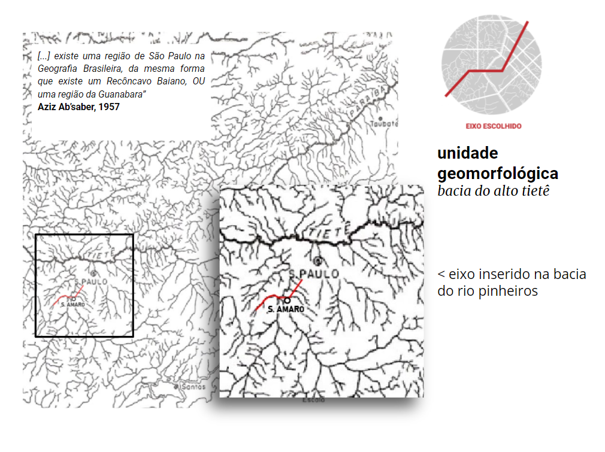
- Categoria
- Trabalho de Conclusão de Curso · Arquitetura e Urbanismo
- Ano
- 2020
- Orientação
- Ralf José Castanheira Flôres
- Status
- Concluído